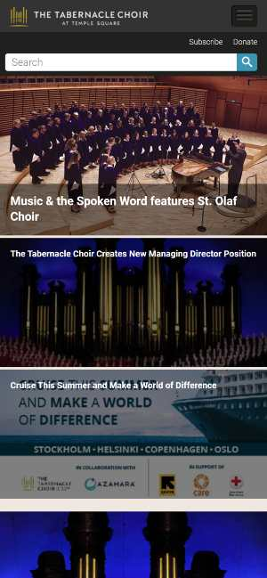

I consider that the tabernacle choir site is a good exmaple of repetition, because at every section you can see a reference to the tebernacle choir. They are showing different contents, but all of them make clear references to the tabernacle choir.
For me Family Search site is a good example of Hick's Law and also of Fitt's Law, because they are very direct, with their center buttons, do you want to log in or start an account? If you scroll you can access other information, but it is a very clear reference that less is more and that if the buttons are more accesible it will be easier for the user to interact.If yo analize it you are just watching a background picture, with few lines of information and two buttons.
Dell Technologies site is a very good example of white space, they show you their bussiness, with big images, and some supporting material, but it is a very clear site. They have lots of space between the image and the information. It is a serious type of site, but if you scroll you can find some movement in the design.